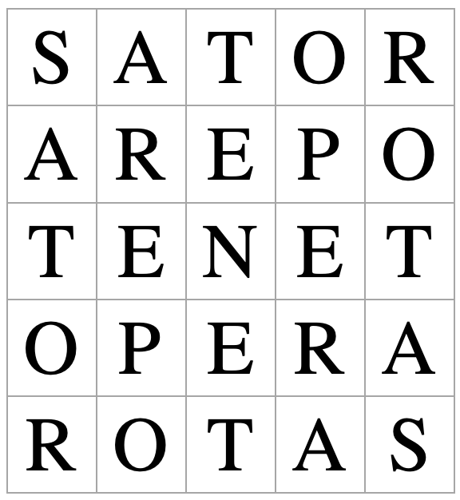

Open Music Theory：繁體中文版
十二音分析範例：魏本Op.21與Op.24
查看英文原文
Key Takeaways
- When approaching twelve-tone music, it's easy to get bogged down simply identifying row forms and lose sight of the bigger picture.
- A list of row forms used in a twelve-tone work is similar to a list of keys in a tonal work—useful, but not enough on its own to be called an analysis.
- This chapter considers two iconic works of early twelve-tone music – Webern's Op. 21 and Op. 24 – with analysis of both the
- technical details of constructing symmetrical row and composing serial canons, with
- wider issues about the work to consider, such as the meaning of a "Symphony" and "Concerto" in this context.
- Scores may be found on IMSLP.org (Op. 21; Op. 24)
魏本：《交響曲》（Symphonie），Op.21（1928）
Anton Webern（魏本）的《交響曲》Op.21，連曲名都引人發問。為什麼他選擇稱它為交響曲？如果交響曲意味著某些特定的調性關係，那麼「無調性交響曲」是否自相矛盾？評論者對此有不同反應：
- 「魏本選用了古典曲種中最能引起共鳴的名稱，藉此強調：即使一首作品只保留了某些結構原則，這個名稱仍能與它密切相關。」（Whittall，1977，163頁）
- 「它在形式上的處理，幾乎沒有什麼能與傳統交響曲相比。」（Taruskin，2010，728頁）
接下來探討作品的具體構造時，請把這些問題放在心上。
查看英文原文
Webern: Symphonie Op. 21 (1928)
Even the title of Anton Webern’s Symphonie Op. 21 raises questions. Why would Webern choose to call this a symphony? If we think of a symphony as having certain types of key relations, then is an atonal symphony an oxymoron? Commentators have a range of reactions to this question:
- "in choosing the most resonant of classical titles Webern stressed the extent to which it could still be relevant to a work in which only certain structural principles remain valid." (Whittall 1977, 163).
- "There is little or nothing in its formal procedures to compare with those of the traditional symphony." (Taruskin 2010, 728).
Keep these questions in mind as we consider the nuts and bolts of the work.
音列形式
- Trichord＝三音組；
- Hexachord＝六音組；
- 括號內數字標示集合類。
音高類依序9–6–7｜8–4–5｜11–10–2｜1–0–3。
- 四個三音組依序屬(013)、(014)、(014)、(013)；
- 兩個六音組都屬集合類(012345)，實際內容互補，並不是相同的六個音。
魏本經常選用結構相當「工整」的音列形式，本曲也不例外（見例1）。音列整齊地分成兩個等價的六音組：它們是同一音高類集合類型的兩個實例，具體說，是集合類6-1，也就是半個半音音階。每一組都填滿十二音空間中連續六個半音位置，兩組合起來涵蓋全部十二音高類。
此外，每個六音組又各包含一個(013)與一個(014)三音組。四個三音素材依序是(013)、(014)、(014)、(013)。這兩類三音組還共享一種旋律形狀：都包含一個三度音程（大三度或小三度）與一個半音。
以下是音列矩陣，以粗體標出P0與R6各自的前六音，凸顯它們的對稱關係。[1]
| I0 | I9 | I10 | I11 | I7 | I8 | I2 | I1 | I5 | I4 | I3 | I6 | ||
| P0 | 9 | 6 | 7 | 8 | 4 | 5 | 11 | 10 | 2 | 1 | 0 | 3 | R0 |
| P3 | 0 | 9 | 10 | 11 | 7 | 8 | 2 | 1 | 5 | 4 | 3 | 6 | R3 |
| P2 | 11 | 8 | 9 | 10 | 6 | 7 | 1 | 0 | 4 | 3 | 2 | 5 | R2 |
| P1 | 10 | 7 | 8 | 9 | 5 | 6 | 0 | 11 | 3 | 2 | 1 | 4 | R1 |
| P5 | 2 | 11 | 0 | 1 | 9 | 10 | 4 | 3 | 7 | 6 | 5 | 8 | R5 |
| P4 | 1 | 10 | 11 | 0 | 8 | 9 | 3 | 2 | 6 | 5 | 4 | 7 | R4 |
| P10 | 7 | 4 | 5 | 6 | 2 | 3 | 9 | 8 | 0 | 11 | 10 | 1 | R10 |
| P11 | 8 | 5 | 6 | 7 | 3 | 4 | 10 | 9 | 1 | 0 | 11 | 2 | R11 |
| P7 | 4 | 1 | 2 | 3 | 11 | 0 | 6 | 5 | 9 | 8 | 7 | 10 | R7 |
| P8 | 5 | 2 | 3 | 4 | 0 | 1 | 7 | 6 | 10 | 9 | 8 | 11 | R8 |
| P9 | 6 | 3 | 4 | 5 | 1 | 2 | 8 | 7 | 11 | 10 | 9 | 0 | R9 |
| P6 | 3 | 0 | 1 | 2 | 10 | 11 | 5 | 4 | 8 | 7 | 6 | 9 | R6 |
| RI0 | RI9 | RI10 | RI11 | RI7 | RI8 | RI2 | RI1 | RI5 | RI4 | RI3 | RI6 |
例2。Op.21的音列矩陣。
整體而言，這個音列具有逆行等價性：倒著演奏（R），會得到原形（P）的某個移位版本。出現這類等價關係時，就不再有48個互不相同的音列形式。本例的形式兩兩重合，因此只有24個不同排列（48除以2）。
魏本讓一個音列形式的結尾與下一個形式的開頭重疊，藉此凸顯音列的對稱。
查看英文原文
Row form
Webern frequently chooses what you might think of as "neat" row forms, and this work is no exception (see Example 1). The row breaks up neatly into two equivalent hexachords that are instances not simply of the same pitch-class set but of set 6-1 specifically: half a chromatic scale. In short, each fills the total chromatic collection of half the twelve-tone space.
Further, those hexachords are each set out with one instance of trichord (013) and one of (014). Altogether, the four trichord cells map out as (013), (014), (014), (013). These two trichords are further linked by their shared melodic shape: each involves a third (major or minor) and a semitone.
Here is the row matrix, with the symmetry of P0 and R6 highlighted by showing the first six notes of each in bold. [1]
| I0 | I9 | I10 | I11 | I7 | I8 | I2 | I1 | I5 | I4 | I3 | I6 | ||
| P0 | 9 | 6 | 7 | 8 | 4 | 5 | 11 | 10 | 2 | 1 | 0 | 3 | R0 |
| P3 | 0 | 9 | 10 | 11 | 7 | 8 | 2 | 1 | 5 | 4 | 3 | 6 | R3 |
| P2 | 11 | 8 | 9 | 10 | 6 | 7 | 1 | 0 | 4 | 3 | 2 | 5 | R2 |
| P1 | 10 | 7 | 8 | 9 | 5 | 6 | 0 | 11 | 3 | 2 | 1 | 4 | R1 |
| P5 | 2 | 11 | 0 | 1 | 9 | 10 | 4 | 3 | 7 | 6 | 5 | 8 | R5 |
| P4 | 1 | 10 | 11 | 0 | 8 | 9 | 3 | 2 | 6 | 5 | 4 | 7 | R4 |
| P10 | 7 | 4 | 5 | 6 | 2 | 3 | 9 | 8 | 0 | 11 | 10 | 1 | R10 |
| P11 | 8 | 5 | 6 | 7 | 3 | 4 | 10 | 9 | 1 | 0 | 11 | 2 | R11 |
| P7 | 4 | 1 | 2 | 3 | 11 | 0 | 6 | 5 | 9 | 8 | 7 | 10 | R7 |
| P8 | 5 | 2 | 3 | 4 | 0 | 1 | 7 | 6 | 10 | 9 | 8 | 11 | R8 |
| P9 | 6 | 3 | 4 | 5 | 1 | 2 | 8 | 7 | 11 | 10 | 9 | 0 | R9 |
| P6 | 3 | 0 | 1 | 2 | 10 | 11 | 5 | 4 | 8 | 7 | 6 | 9 | R6 |
| RI0 | RI9 | RI10 | RI11 | RI7 | RI8 | RI2 | RI1 | RI5 | RI4 | RI3 | RI6 |
Example 2. Row matrix for Op. 21.
Overall, the row is retrograde equivalent, which is to say, if you play it backwards (R), you have a transposed version of the original (P). When we have equivalences of this kind, there are no longer 48 distinct row forms. Here we have pairs of equivalent rows, and so there are 24 distinct forms (48 divided by 2).
Webern brings out this symmetrical row by overlapping the ends of row forms with the beginning of the next.
第一樂章
魏本將第一樂章描述為「反向進行的雙重卡農」；這裡的「反向進行」與「倒影」意思相同。整體形式可以看成𝄆A𝄇𝄆BA′𝄇，各部分如下：
- A：第1小節至雙縱線處（第23–25小節）。
- B：回文式構造，以第35小節為對稱中心；豎笛的材料見第25–43小節，大提琴則見第26–42小節。
- A′：從第43小節開始「音列的再現」；再現的是音列，而非動機節奏等其他要素。
這或許能支持把它理解為交響曲。不過，音列廣泛的對稱性還不只如此。Bailey（1991，96頁）特別把中段形容為對稱手法的「技藝展示」。再現與循環形式是一回事；如此徹底地貫徹對稱，對西方古典音樂而言，卻是格外具有二十世紀色彩的概念。英國作曲家Jonathan Harvey談到和弦中的類似問題時，曾把將低音移到中央的對稱策略稱為「我們的革命」（1982，2頁）。
另一項與奏鳴曲式觀念不甚相合的特徵，是各段大量使用卡農。例如開頭有兩組聲部構成雙重卡農，分別使用P0與I0、I8與P4，如下：
| 音列形式 | 樂器 | |
|---|---|---|
| 卡農1 | P0 | 第二法國號 → 豎笛 → 大提琴；與大提琴 → 豎笛 → 第二法國號重疊銜接 |
| I0 | 第一法國號 → 低音豎笛 → 中提琴；與中提琴 → 低音豎笛 → 第一法國號重疊銜接 | |
| 卡農2 | I8 | 豎琴 → 大提琴 → 第二小提琴 → 豎琴 → 第二法國號 → 豎琴 → 第二法國號（……） |
| P4 | 豎琴 → 中提琴 → 第一小提琴 → 豎琴 → 第一法國號 → 豎琴（……） |
例3。Op.21開頭的卡農。
請留意兩組配對中相似的音色次序。例如第一組先是法國號，再是豎笛類樂器，最後交給較低音域的弦樂器，然後沿原路對稱地返回。把旋律線如此拆分，有時稱為Klangfarbenmelodie（音色旋律）；它不是無調性作曲家獨有的手法，例如馬勒也很喜歡這樣分配旋律（見〈管弦樂配器〉）。魏本最具代表性的例子，或許是他為J.S.巴赫《音樂的奉獻》中的利切爾卡所作的管弦樂編曲。
查看英文原文
Movement 1
Webern describes the first movement as a “double canon in contrary motion,” where “contrary motion” means the same thing as “inversion.” You could think of the overall form as 𝄆A𝄇𝄆BA′𝄇 as follows:
- A: From m. 1 to the double bar (mm. 23-25).
- B: palindromic: m. 35 as the midpoint of mm. 25–43 in the clarinet (or mm. 26–42 in the cello).
- A′: "row recapitulation" from m. 43 (rows only, not motivic rhythm, etc.).
Does that remind you of something symphonic? The repeat markings and the material distribution are loosely suggestive of the Exposition and Development-Recapitulation repeats in sonata form works, or at least rounded binary.
So that might be chalked up in favor of the symphonic reading. On the other hand, the extensive symmetry of the row doesn't end there. Bailey (1991, 96) has described the middle section especially as a symmetrical "tour de force." Recapitulations and cyclic forms are one thing, but for Western classical music, serious adherence to symmetry is a peculiarly 20th-century concept. Speaking about a chordal version of this issue, the British composer Jonathan Harvey once described the symmetrical strategy of moving the bass into the middle as "our revolution" (1982, 2).
Another key consideration at odds with the notion of sonata form is the extensive canons in each section. For instance, in the opening, there's a double canon between pairs of parts (P0 and I0; I8 and P4) as follows:
| Row form | Instruments | |
|---|---|---|
| Canon 1 | P0 | Horn 2 → clarinet → cello; elides with cello → clarinet → horn 2 |
| I0 | Horn 1 → bass clarinet → viola; elides with viola → bass clarinet → horn 1 | |
| Canon 2 | I8 | Harp → cello → violin 2 → harp → horn 2 → harp → horn 2 (…) |
| P4 | Harp → viola → violin 1 → harp → horn 1 → harp (…) |
Example 3. Canons in the beginning of Op. 21.
Notice the similar timbral sequences in the two pairs. For instance, in the first pair, we have a horn part, then a clarinet part, and finally a lower string instrument before returning symmetrically back the way we came. Breaking up the melodic line in this way is sometimes called Klangfarbenmelodie (sound-color melody) and is not unique to the atonalists. Mahler loved to share out melodies this way, for instance (see Orchestration). Perhaps Webern's most iconic example of this technique is his orchestration of J.S. Bach's Ricercar from the Musical Offering.
第二樂章：變奏曲；包含逆行的雙重卡農
第二樂章的標題就沒有爭議了：「變奏曲」確實貼切。魏本以典型的方式，動用各種音樂要素來凸顯結構。以下用筆記形式，簡要整理各段：
主題（與尾奏相關）
- 第1–11小節。
- 樂句分成5.5＋5.5小節的兩組，第6小節是中心。
- 豎笛使用I8，其他聲部使用I2。
- 運用六音組的互補組合性。
第一變奏（與第七變奏相關）
- 第11–23小節；開頭與主題重疊銜接。
- 相隔一個四分音符進入的雙重卡農：第一小提琴與大提琴配對，第二小提琴與中提琴配對。
- 跨越這兩組來看，第一小提琴的I3與第二小提琴的I9互為逆行；中提琴的P7與大提琴的P1也互為逆行。
- 樂句分成6＋6小節；小提琴以第17小節為中心，中提琴與大提琴則在第18小節。兩部小提琴交換音列，中提琴與大提琴也交換音列。
- 結尾與第二變奏重疊銜接。
第二變奏（與第六變奏相關）
- 第23–34小節。
- 樂句分成6＋6小節，以第29小節為中心。
- 另有一個自由的第三聲部，由第一法國號演奏。正拍使用P8，反拍使用I7，因此八分音符在兩個音列之間交替。
- 結尾與第三變奏重疊銜接。
第三變奏（與第五變奏相關）
- 第34–44小節。
- 樂句分成1＋4＋1＋4＋1小節，中心在第39小節。
- 各聲部都有對稱的旋律音型，並以十六分音符推進。
- 第45–55小節。
- 魏本本人將這個變奏描述為整個樂章的中心。
- 樂句分成5＋1＋5小節，以第50小節為中心。
第五變奏（與第三變奏相關）
- 第56–67小節。
- 音高以四音素材呈現：
- 中提琴、大提琴：[5, 6, 7, 8]
- 小提琴：[11, 0, 1, 2]
- 豎琴：[3, 4, 10, 9]
- 這些四音素材合起來構成十二音總集，但這一段的寫作不以音列次序為基礎。
- 各聲部都有對稱的旋律音型。
第六變奏（與第二變奏相關）
- 第67–77小節。
- 低音豎笛與豎笛構成相隔一個四分音符進入的卡農。
- 第一法國號是自由的第三聲部，為第二變奏中自由聲部的逆行。
- 中心在第73小節。
第七變奏（與第一變奏相關）
- 第78–88小節。
- 三重卡農：大提琴／第一小提琴、中提琴／第二小提琴，以及豎笛／低音豎笛。三組卡農的線條以音色與節奏區分。
- 中心在第83小節。
尾奏（與主題相關）
- 第89–99小節。
- 樂句分成5.5＋5.5小節，以第94小節為中心。
查看英文原文
Movement 2: Variations; a double canon with retrograde
With the second movement, there's no disputing the title: "Variations" is certainly apt, and the structure is brought out in typically Webernian fashion using all the parameters. Here's a brief synopsis in note form of what's going on:
Theme (related to the coda)
- Measures 1–11.
- Phrases divide into two groupings of 5.5 + 5.5 measures; m. 6 is the midpoint.
- Row I8 is in the clarinet; I2 in the other parts.
- Uses hexachordal combinatoriality.
Variation 1 (related to variation 7)
- Measures 11–23; beginning elides with the theme.
- A double canon at the quarter note: violin 1 pairs up with cello; violin 2 with viola.
- Across those pairs, violin 1 (I3) is R-related to violin 2 (I9); the viola (P7) is likewise R-related to cello (P1).
- Phrases divide into 6 + 6 measures; the midpoint is m. 17 for the violins, m. 18 for the viola and cello. The violins swap rows, as do the viola and cello.
- The ending elides with variation 2.
Variation 2 (related to variation 6)
- Measures 23–34.
- Phrases divide into 6 + 6 measures (midpoint at m. 29).
- However, there is a free third part (horn 1). The on-beats play P8 while the off-beats play I7, so the eighth notes are alternating between the two rows.
- The ending elides with variation 3.
Variation 3 (related to variation 5)
- Measures 34–44.
- Phrases divide into 1 + 4 + 1 + 4 + 1 measures; midpoint in m. 39.
- Symmetrical melodic figure in each part, and sixteenth-note motion.
Variation 4
- Measures 45–55.
- Webern himself describes this variation as the midpoint of the movement.
- Phrases divide into 5 + 1 + 5; m. 50 is the midpoint.
Variation 5 (related to variation 3)
- Measures 56–67.
- Pitches are presented in four-note cells:
- Viola, cello: [5, 6, 7, 8]
- Violins: [11, 0, 1, 2]
- Harp: [3, 4, 10, 9]
- These four-note cells create a twelve-tone aggregate, but the composition is not row-based.
- Each part has a symmetrical melodic figure.
Variation 6 (related to variation 2)
- Measures 67–77.
- Canon at the quarter note between the bass clarinet and clarinet parts.
- Free third part (horn 1), the retrograde of the free part in Variation 2.
- Midpoint in m. 73.
Variation 7 (related to variation 1)
- Measures 78–88.
- Triple canon: cello/violin 1, viola/violin 2, and clarinet/bass clarinet. Each line of the three canons is distinguished by timbre and rhythm.
- Midpoint in m. 83.
Coda (related to the theme)
- Measures 89–99.
- Phrases are divided into 5.5 + 5.5 measures, with m. 94 as the midpoint.
值得思考的問題
前面的分析反覆出現一些主題，其中最貫穿全曲的，或許是魏本從音列內部結構，一路運用到整個樂章組織的對稱性。
這使作品徹底現代化了嗎？還是說，對稱性促成了一種新的、朝向目標前進的音樂，也就是至少自貝多芬以來常見的目的論式構思？面對偶爾出現的直接歷史先例，例如海頓第47號交響曲中完全對稱的小步舞曲與中段，我們又作何感想？
更要緊的是，這一切對稱在聽覺上產生什麼效果？前面Harvey的引文是否讓你感到不以為然？畢竟，作曲家歷來傾向從實際最低音往上建構和弦，是有聲學理由的。同樣地，我們無法像看見畫作的對稱那樣，直接「聽見」時間線上的對稱，也就是倒著聽。不過，魏本確實花了很多心力，至少在某些地方讓作品結構更清晰。Cook認為：「《交響曲》中的一切設計，都是為了使序列能被聽見。」（1987，295頁）
或許可以把它與其他二十世紀「別具巧思的交響曲」一起思考。例如史特拉汶斯基的《C大調交響曲》《詩篇交響曲》與《管樂交響曲》，都沒有沿用傳統編號。至少，這些作品似乎表達了作曲家對其所承繼音樂傳統的信念；荀貝格也同樣熱切地將他那些看似激進、具有現代主義色彩的作品放入傳統，尤其強調自己承繼了布拉姆斯。
查看英文原文
Issues
You’ll have noticed some recurring themes in the analysis above; perhaps the most all-pervasive among them is the symmetry Webern adopts from the internal structure of the row, right up to the organization of whole movements.
Does this make it thoroughly modern? Or does the symmetry contribute to a new kind of goal-directed (teleological) music typical since at least Beethoven? How do we feel about the occasional direct historical precedent like the entirely symmetrical Minuet and Trio in Haydn's 47th symphony?
Most importantly, what is the aural effect of all this symmetry? Did the Harvey quote above make you bristle? There are reasons based in acoustics for why composers have historically tended to build up chords from the actual bass after all. Similarly, we can't really "hear" linear symmetry (hear in reverse) the same way that we can see symmetry in a painting, for instance. That said, Webern has gone to considerable lengths (at least in places) to illuminate the structure of the work. For Cook, "everything [in the Symphonie] is designed to make the series audible" (1987, 295).
Perhaps we should consider this alongside other 20th-century "symphonies with a twist." Think of Stravinsky's many "Symphonies" ("in C," "of Psalms," "of Winds"), none of them numbered in the traditional way. If nothing else, these works seem to speak of a conviction to the musical traditions these composers inherited, just as Schoenberg was so keen to locate his apparently radical, modernist works in that tradition, and particularly as heir to the work of Brahms.
魏本：《協奏曲》（Konzert），Op.24（1934）
魏本的《協奏曲》引出許多與《交響曲》相同的技術問題與廣泛的音樂問題。它同樣有個「工整」的音列（例4），也有個意味深長的標題，似乎在呼應悠久的音樂傳統。
查看英文原文
Webern: Konzert Op. 24 (1934)
Webern's Konzert (Concerto) raises many of the same technical and wider musical issues as the Symphonie. It has a similarly "neat" row (Example 4), and a similarly suggestive title, apparently alluding to a long-standing musical tradition.
音列
- Trichord＝三音組；
- Hexachord＝六音組；
- 括號內數字標示集合類。
音高類依序11–10–2｜3–7–6｜8–4–5｜0–1–9。
四個三音組都屬集合類(014)，兩個六音組都屬集合類(014589)，但各組的實際音高類不同。
原譜開頭是B–B♭，所以矩陣第二音應為10，非英文原表的8。
例4。魏本《協奏曲》Op.24的音列，以及三音組與六音組的劃分。
這次同樣有兩個屬於集合類(014589)的等價六音組，也能有意義地分成四個三音組。這四組全都屬於同一集合類：(014)。開頭幾小節把這個結構劃分表現得非常清楚：音列的四個部分分別交給不同樂器，在不同的節奏脈動與音域中呈現，接著所有樂器一同休止。音列的「呈示」，幾乎不可能更清楚了。
還不只如此。若改變這四個三音素材的排列次序，也可以得到彼此相關的其他音列形式：
- 先把四組內部的三音次序保持不變，標為1、2、3、4。依本章矩陣的可移動零點命名，P0＝1234；將四組反排成4321，得到的是I1。
- 次序2143得到R6；次序3412則得到RI7。後者也等於將P0前六音搬到後面的循環排列。
因此，若保留各三音組內部的順序，卻忽略四組之間的先後，這四個形式會使用相同的一組素材；依這個較寬的等價條件，48個音列形式可分成12組。不過，若仍將十二個音的完整先後視為音列的一部分，本曲其實有48個不同的有序音列。例如，RI7要從第七音開始循環讀取，才與P0完全相同；不先做這個循環移動，兩者並不是同一排列。下方矩陣的粗體標示了這種對應，呈現材料之間緊密的連貫性。
例5是音列矩陣。這次也一樣——或許更令人意外——這個排列選定的P0，與魏本草稿中的指定不同。
| I0 | I11 | I3 | I4 | I8 | I7 | I9 | I5 | I6 | I1 | I2 | I10 | ||
| P0 | 11 | 10 | 2 | 3 | 7 | 6 | 8 | 4 | 5 | 0 | 1 | 9 | R0 |
| P1 | 0 | 11 | 3 | 4 | 8 | 7 | 9 | 5 | 6 | 1 | 2 | 10 | R1 |
| P9 | 8 | 7 | 11 | 0 | 4 | 3 | 5 | 1 | 2 | 9 | 10 | 6 | R9 |
| P8 | 7 | 6 | 10 | 11 | 3 | 2 | 4 | 0 | 1 | 8 | 9 | 5 | R8 |
| P4 | 3 | 2 | 6 | 7 | 11 | 10 | 0 | 8 | 9 | 4 | 5 | 1 | R4 |
| P5 | 4 | 3 | 7 | 8 | 0 | 11 | 1 | 9 | 10 | 5 | 6 | 2 | R5 |
| P3 | 2 | 1 | 5 | 6 | 10 | 9 | 11 | 7 | 8 | 3 | 4 | 0 | R3 |
| P7 | 6 | 5 | 9 | 10 | 2 | 1 | 3 | 11 | 0 | 7 | 8 | 4 | R7 |
| P6 | 5 | 4 | 8 | 9 | 1 | 0 | 2 | 10 | 11 | 6 | 7 | 3 | R6 |
| P11 | 10 | 9 | 1 | 2 | 6 | 5 | 7 | 3 | 4 | 11 | 0 | 8 | R11 |
| P10 | 9 | 8 | 0 | 1 | 5 | 4 | 6 | 2 | 3 | 10 | 11 | 7 | R10 |
| P2 | 1 | 0 | 4 | 5 | 9 | 8 | 10 | 6 | 7 | 2 | 3 | 11 | R2 |
| RI0 | RI11 | RI3 | RI4 | RI8 | RI7 | RI9 | RI5 | RI6 | RI1 | RI2 | RI10 |
例5。Op.24的音列矩陣。
查看英文原文
The row
Example 4. The row of Webern's Konzert (Op. 24) along with the trichordal and hexachordal divisions.
Once again, we have two equal hexachords of set class (014589) and a meaningful division into four trichords. This time, those trichords are all instances of the same set class: (014). This structural division is made abundantly clear in the first few measures, in which the row is set out in its four parts in separate instruments, pulse values, and registers. This is followed by a rest in all instruments. You couldn't hope to a see a clearer row "exposition."
But that's not all. If you permute the order of those trichord cells, you can get other, related row forms:
- Obviously, reversing the order of the cells can give you a P/R pair of rows (P = 1234; R = 4321).
- Additionally in this case, the order 2143 gives you an I row, and so the reverse of that (3412) is an RI row.
That being the case, we have a set of four equivalent rows, and thus only twelve distinct row forms this time. For instance, P0 is the same as RI7 starting that rotation from the seventh note, as shown by the bold in the matrix below. This all amounts to a particularly clear and determined level of coherence.
Example 5 gives the row matrix. Again (and perhaps more surprisingly this time) this arrangement does not correspond to the allocation of P0 by Webern in the sketches.
| I0 | I11 | I3 | I4 | I8 | I7 | I9 | I5 | I6 | I1 | I2 | I10 | ||
| P0 | 11 | 8 | 2 | 3 | 7 | 6 | 8 | 4 | 5 | 0 | 1 | 9 | R0 |
| P1 | 0 | 11 | 3 | 4 | 8 | 7 | 9 | 5 | 6 | 1 | 2 | 10 | R1 |
| P9 | 8 | 7 | 11 | 0 | 4 | 3 | 5 | 1 | 2 | 9 | 10 | 6 | R9 |
| P8 | 7 | 6 | 10 | 11 | 3 | 2 | 4 | 0 | 1 | 8 | 9 | 5 | R8 |
| P4 | 3 | 2 | 6 | 7 | 11 | 10 | 0 | 8 | 9 | 4 | 5 | 1 | R4 |
| P5 | 4 | 3 | 7 | 8 | 0 | 11 | 1 | 9 | 10 | 5 | 6 | 2 | R5 |
| P3 | 2 | 1 | 5 | 6 | 10 | 9 | 11 | 7 | 8 | 3 | 4 | 0 | R3 |
| P7 | 6 | 5 | 9 | 10 | 2 | 1 | 3 | 11 | 0 | 7 | 8 | 4 | R7 |
| P6 | 5 | 4 | 8 | 9 | 1 | 0 | 2 | 10 | 11 | 6 | 7 | 3 | R6 |
| P11 | 10 | 9 | 1 | 2 | 6 | 5 | 7 | 3 | 4 | 11 | 0 | 8 | R11 |
| P10 | 9 | 8 | 0 | 1 | 5 | 4 | 6 | 2 | 3 | 10 | 11 | 7 | R10 |
| P2 | 1 | 0 | 4 | 5 | 9 | 8 | 10 | 6 | 7 | 2 | 3 | 11 | R2 |
| RI0 | RI11 | RI3 | RI4 | RI8 | RI7 | RI9 | RI5 | RI6 | RI1 | RI2 | RI10 |
Example 5. Row matrix for Op. 24.
三音素材
每個素材也可以理解為一個有序三音組，就像一條迷你的三音音列。每次出現都包含方向相反的音程類4與音程類1；一條音列中的四次出現，恰好涵蓋這種安排的四種方式。以P0而言，依序為<−1, +4>、<+4, −1>、<−4, +1>與<+1, −4>。
因此，雖然可能讓事情稍微複雜一些，我們可以不只談整條音列的P、R、I、RI，也談每個三音素材的這四種形式。繼續以P0為基礎，四組依序為：
- P：<−1, +4>
- RI：<+4, −1>
- R：<−4, +1>
- I：<+1, −4>
於是，每個三音素材與其餘各組，都有例6所列的關係：
| 三音組1 | 三音組2 | 三音組3 | 三音組4 | |
|---|---|---|---|---|
| 三音組1 | - | RI | R | I |
| 三音組2 | RI | - | I | R |
| 三音組3 | R | I | - | RI |
| 三音組4 | I | R | RI | - |
例6。Op.24音列中各有序三音組的關係。
{kind=link}

方陣逐列為SATOR／AREPO／TENET／OPERA／ROTAS。
- 這裡保留拉丁字母，才能看出橫列與直行相同、旋轉180度不變的結構；
- 字母排列本身就是譜例要表達的內容。
不過，把音列分成四個三音組，並不是唯一用法。這種做法在第一樂章居於核心；第二樂章則主要使用二音與四音素材，凸顯音程類1，通常把它配置成大七度。
查看英文原文
Cell
Each cell can also be understood as an ordered trichord, like a miniature three-note row. Each iteration of the cell involves interval class 4 and interval class 1 in opposite directions. Across the four iterations in a row, we get each of the four ways of setting this out. In the case of P0, this involves <−1, +4>, <+4, −1>, <−4, +1>, and <+1, −4>.
That being the case (and at the risk of confusing matters), we could think of the P, R, I, and RI versions not just of each row, but of each cell. Continuing to work on the basis of P0, we have:
- P: <−1, +4>
- RI: <+4, −1>
- R: <−4, +1>
- I: <+1, −4>
In this way, each cell is related to every other as shown in Example 6:
| Trichord 1 | Trichord 2 | Trichord 3 | Trichord 4 | |
|---|---|---|---|---|
| Trichord 1 | - | RI | R | I |
| Trichord 2 | RI | - | I | R |
| Trichord 3 | R | I | - | RI |
| Trichord 4 | I | R | RI | - |
Example 6. Relationships between ordered trichords in the row for Op. 24.
It's hardly surprising given all of this that Webern was a fan of the "Sator Square": a two-dimensional Latin palindrome that can be read in any direction and still make sense (Example 7).
That all said, the four-trichord approach is not the only way of using the row. It's focal in the first movement, while the second movement primarily employs cells of two and four notes, highlighting interval class 1 (usually set out as a major seventh).
討論
我們再次面對一個問題：這個曲種傳統已建立了相當明確的期待，本曲究竟是哪一種協奏曲？從全曲音列形式的分配，可以找到支持「鋼琴協奏曲」解讀的線索。例如，音列第一次呈示由鋼琴以外的樂器負責；全體休止後，鋼琴獨自第二次呈示音列。至少在概念上，這很符合協奏曲第一樂章的雙呈示部，而雙呈示部正是協奏曲中的奏鳴曲式，有別於其他場合的主要特徵之一。
只憑音列出現兩次，就作這樣的解讀，是否有點牽強？也許吧。但魏本也經常在極小與極大的尺度上，培養相似的過程。因此，這些線索仍值得留意，可能是某種「意圖的表明」；就像我們也應該留意舒伯特奏鳴曲中，第一個高度半音化的事件。
本曲鋼琴與合奏之間的關係，持續提供值得分析的材料。開頭幾小節之後，樂章的第一個大段，從鋼琴與合奏清楚地先後分開陳述，逐漸轉為兩者在音列形式上仍然分開，卻同時發聲。你可以沿著這層關係分析全曲；許多時刻似乎既是結構邊界，也伴隨鋼琴與合奏關係的改變，例如第50小節的分開，以及第63小節的重新匯合。
即使覺得這條思路有說服力，你仍會不斷面對選擇。例如，較慢、較安靜的第二樂章很容易讓人聯想到傳統的第二樂章；鋼琴幾乎無處不在，你可以把它理解為抒情、主導的獨奏聲部，也可以反過來，視為伴奏。或者，你不接受這些解讀，而認為各樂器平等——也許呼應各音的平等地位——那麼，將作品理解為「樂團協奏曲」，是否更能令你信服？
和所有音樂一樣，這首作品可以有不只一種看法。分析所關心的，是提供一個理解作品的角度，而非找出唯一、包辦一切的答案。十二音音樂的分析也和其他分析一樣：理解技術要素是必要條件，卻還不夠；其中始終有充分的空間，容納有創意、有活力的思考。
- Bailey, Kathryn。1991。Twelve-Note Music of Anton Webern: Old Forms in a New Language（魏本的十二音音樂：新語言中的舊形式）。劍橋：Cambridge University Press。
- Cook, Nicholas。1987。A Guide to Musical Analysis（音樂分析指南）。倫敦：Dent。
- Harvey, Jonathan。1982。〈Reflection after Composition〉（作曲之後的反思）。Tempo，第140期，2–4頁。
- Taruskin, Richard。2010。〈In Search of Utopia〉（尋找烏托邦）。收於Music in the Early Twentieth Century（二十世紀初的音樂），第12章。紐約：Oxford University Press。https://www.oxfordwesternmusic.com/view/Volume4/actrade-9780195384840-div1-012010.xml
- Whittall, Arnold。1977。Music since the First World War（第一次世界大戰以來的音樂）。紐約：Oxford University Press。
- 試著自行分析另一首這個時期的作品，例如魏本《鋼琴變奏曲》Op.27，同樣結合音列技術分析與脈絡討論。
媒體來源與授權
- Sator方陣，Megan Lavengood製作；原來源標示為公眾領域。
- 矩陣有時採另一種排法，將P與I的方向對調。Bailey（1991，附錄II）依魏本草稿，採用的就是這種排法。這類選擇往往沒有哪一種明顯「比較好」。↵
查看英文原文
Discussion
Once again, we have the looming question of a tradition with highly codified expectations. What kind of concerto might this be? The idea of a piano concerto finds some support in the distribution of row forms across the work. For instance, that first exposition of the row falls to instruments other than the piano, and then there's the full-ensemble rest and a second exposition of the row on the piano alone. Conceptually at least, this is a neat fit for the double exposition of concerto first movements—one of the main hallmarks by which sonata form in concertos differs from other contexts.
Are we clutching at straws on the basis of just two statements of the row? Maybe, but then again, Webern is no stranger to the practice of cultivating comparable processes on the very small and large scale, so it's worth paying attention to these kinds of clues as possible "statements of intention" in the same way that we should take notice of the first highly chromatic event in a Schubert sonata.
In this work, the relationship between piano and orchestra continues to reward analytical attention. After those first few measures, the first major section of the movement moves from that initial clear, successive separation of piano from ensemble to a situation where they remain separate in terms of row forms, but sound simultaneously. You can analyze the whole work in terms of this relation, and there are many moments where there appears to be both a structural boundary and a change in the relation between piano and ensemble. Examples include the separation in m. 50 and rejoining in m. 63.
Even if you find this line of reasoning compelling, you still face choices at every turn. For instance, you may see the piano's ubiquity in the slower, quieter second movement (highly reminiscent of the traditional second movement) as a lyrical, dominant, soloistic part, or the opposite – in an accompanimental role. Alternatively, if you reject all of this in favor of an equality among the instruments (matching the equality among the tones, perhaps), then you may find more palatable the idea of reading this as a Concerto for Orchestra?
As with all music, there's more than one way to look at this piece, and as with all analysis, we're much more concerned with a view ("a way" of understanding the work) than trying to find comprehensive solution ("the way"). In short, the analysis of twelve-tone music is just like other forms of analysis: understanding the technical elements is necessary but not sufficient, and there's always plenty of room for creative vitality.
- Bailey, Kathryn. 1991. Twelve-Note Music of Anton Webern: Old Forms in a New Language. Cambridge: Cambridge University Press.
- Cook, Nicholas. 1987. A Guide to Musical Analysis. London: Dent.
- Harvey, Jonathan. 1982. "Reflection after Composition." Tempo, no. 140, 2–4.
- Taruskin, Richard. 2010. "In Search of Utopia." In Music in the Early Twentieth Century, chapter 12. New York: Oxford University Press. https://www.oxfordwesternmusic.com/view/Volume4/actrade-9780195384840-div1-012010.xml
- Whittall, Arnold. 1977. Music since the First World War. New York: Oxford University Press.
- Try your own analysis of another work from this time, such as Webern's Variations for piano, Op. 27, using a similar combination of technical row analysis with contextual discussion.
Media Attributions
- Sator square © Megan Lavengood is licensed under a Public Domain license
- Note that this is sometimes set out in an alternative format, with P and I the other way around. Bailey (1991, appendix II) after Webern’s sketches uses this alternative format. These kinds of decisions are often not clearly "better" one way or the other. ↵